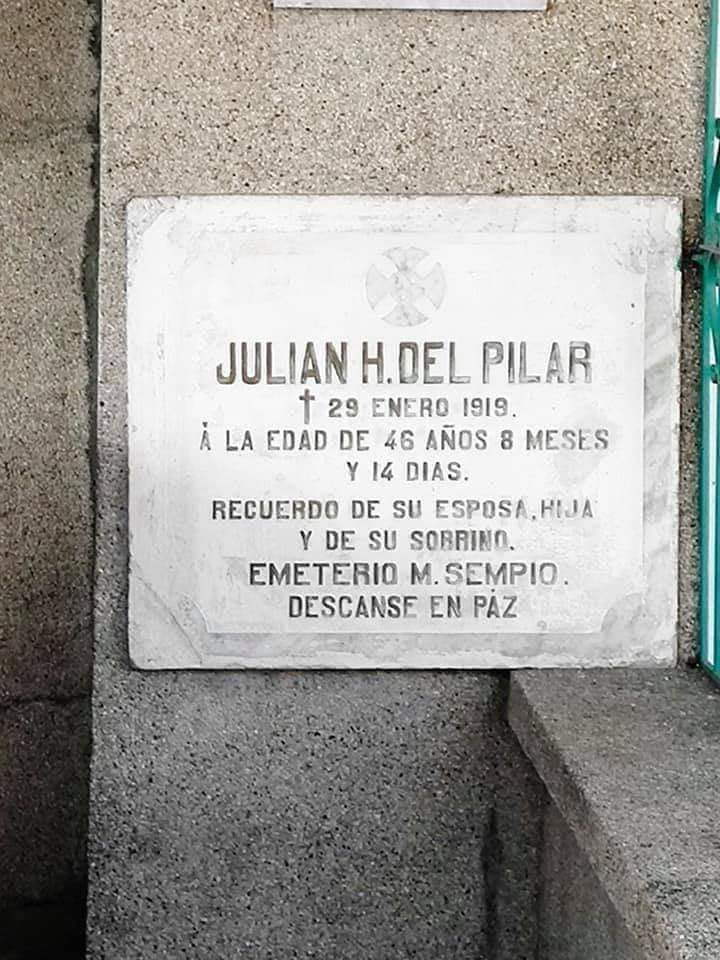

Gregorio was born in 1875 in the Philippines. He was the nephew of Marcelo H. del Pilar, who was a propagandist, and Toribio H. del Pilar, who had been exiled to Guam for participating in the 1872 Cavite Mutiny. The Cavite Mutiny was an unsuccessful mutiny at the Spanish arsenal Fort San Felipe. The participants hoped it would lead to a national uprising. In 1896, Gregorio turned 20 years old and received a Bachelor’s Degree from Ateneo de Manila University.
Gregorio del Pilar was a military man so a key focus of any Gregorio del Pilar biography is the wars in which he fought. The wars included the Philippine Revolution and the Philippine American War.
Phillippine Revolution
The Philippine Revolution is also known as the Tagalog War. The war started in August 1896 with an unsuccessful attack on the capital city of Manila by the secret, secessionist organization named
The Revolution was fought between the Spanish colonial authorities and the Philippine people. Even though there was a truce, the Pact of Biak-na-Bato, hostilities never ceased between the rebels and Spain. The rebels, led by Emilio Aguinaldo, took over almost all the Spanish held ground and Aguinaldo declared Philippine independence in June of 1898
The First Philippine Republic was established and the Treaty of Paris was signed which ceded all Spanish territories in the Pacific to the United States, and soon after that, the Philippine American War began.
In 1896, the war began for Philippine independence from Spanish control. He joined the war efforts and distinguished himself as a field commander and was given the nickname “Boy General.” He was appointed leader of a section of the revolutionary forces in Nueva Ecija and Bulacan. He won against the Spanish forces in Bulacan and went on to assist the other troops who were battling at Manila. During the Philippine American War, he won a battle against Major Franklin Bell. He and his troops stopped a cavalry charge, killing Colonel M. Stotsenburg. On December 2, 1889, he and 60 other revolutionaries fought in the Battle of Tirad Pass. There, he was wounded with a bullet to his neck, and died.
His body lay unburied for several days until an American officer, Lt. Dennis P. Quinlan, found it. Del Pilar was given a military burial and his tombstone said, “An Officer and a Gentleman."
1. Hating-gabi nang Mayo 31, 1898, pagkatapos nilang magtipon sa kamalig ng bahay ni Don Ambrosio Delgado sa Sta Ana, ay nagkaroon ng biglaang paglusob ang hukbo ni Gregorio Del Pilar sa kabayanan ng Bulakan. Gamit ang 500 bagong baril na dala ni Goyo mula Hongkong, nagkaroon ng magdamagang palitan ng putok mula sa magkabilang panig. Kinubkob din nila ang daungan sa ilog ng Matungao kung saan may labindalawang prayle ang kanilang nadakip. May mga kasapi rin ng Milicia Filipina na kumalas ng suporta sa España at sumanib na sa rebolusyon. Sa Bagumbayan ang naging konsentrasyon ng puwersa ni Goyo. Nagsilikas ang mga taga-Bagumbayan patungong San Francisco. Nagsilikas rin ang mga taga-Poblacion patungo sa Tibig.
2. Kinabukasan, ika-1 ng Hunyo, tuluyang napaikutan ng mga rebolusyonaryo ang Simbahan ng Nuestra Señora De La Asuncion. Nakulong sa loob ng simbahan at kumbento ang mga Kastila at mga kaalyado nila. Gayunpaman, sa laki ng pagmamahal ni Goyo sa simbahan ay iniutos ni Goyo na hindi ito patamaan ng kanyon o ano mang makasisira sa simbahan. Ang namuno sa pagpapaikot sa simbahan ay si Julian Del Pilar, nakatatandang kapatid ni Goyo, kung kaya't hindi magawang makapuslit sa pagtakas ang mga Español.
3. Sa loob ng tatlong Linggo ay nakulong ang puwersa ng mga Kastila sa loob ng simbahan at kumbento. Hanggang sa maubusan na sila ng bala at pagkain. Nagdanas ang mga Kastila ng gutom, pagod at hirap. Ang mga nagtangkang tumakas ay hinuhuli at tinataboy pabalik ng simbahan. At habang naghihintay naman sa anumang hudyat ng pakikipag-usap, isang magarbong piging ang inihanda ng mga rebolusyonaryo sa Glorieta (tinatawag na Plaza Del Pilar ngayon). Tinakam ng mga taga-Bulakan ang mga kalabang nasa loob ng simbahan.
4. Hanggang sa dumating ang ika-23 ng Hunyo, isang puting watawat ang iwinagayway sa kampanaryo ng simbahan. Sumuko na ang pamahalaang Español sa Bulakan. Nagkaroon ng pag-uusap na sa kinabukasan ay magkakaroon ng pormal na paglalagda ng pagsuko.
5. Kinabukasan, ika-24 ng Hunyo, sinimulan ang mabunying araw na iyon ng pagmartsa mula sa Casa Real hanggang sa bahay ni Don Manuel Lazaro sa harap ng simbahan. Nagmula naman mula sa dakong Pitpitan si Goyo na sakay ng isang puting kabayo. Isang “arco triunfal” ay sadyang ipinatayo ng mga taga-San Nicolas sa may tulay ng Maysantol at San Jose. Sa pangunguna ng kanyang kababatang si Isidro Wenceslao, ang banda ng Bulakan ay tumugtog ng “Alerta Katipunan”.
6. Naganap ang lagdaan sa bahay ng mga Lazaro sa Poblacion. Ang kumatawan sa pamahalaang Español sa lagdaan ay ang huling Español na Gobernador Civil ng Bulacan na si Hen. Vicente Cuervo, kasama ang commandante ng hukbong Español sa Bulacan na si Ortiz. Sa panig naman ng mga rebolusyonaryo, ang lumagda ay sina Goyo at ang mga kababayang sina Francisco Morelos, Segundo Sempio, at Jose De Los Reyes. Kabilang sa mga isinuko ng Gobernador Civil ang mga gusaling pampamahalaan, kabilang na ang Casa Tribunal at ang Casa Real. Isinuko rin kay Goyo ang mahigit na isang daang ripleng Mauser. Pormal ring ibinaba ang Pambansang Watawat ng España sa saliw ng himig ng isang trumpeta. Kasunod nito ay ang pormal na pagtataas ng Pambansang Watawat ng Pilipinas, sa kauna-unahang pagkakataon sa Bulacan. Sumaludo ang mga Español kay Goyo bilang patunay na siya'y kinikilala nang bagong Gobernador ng Bulacan.
7. Ang awit na pumailanlang sa Poblacion ay ang paboritong awitin ni Goyo na “Sa Magandang Silangan”. Ang awiting ito ay mula sa isang tulang sinulat ni Jose Rizal noong 1891 na nilapatan naman ng himig ng Bulakenyong si Pedro Gatmaitan Santos na mula San Jose. Inawit ito ng tatlumpong mag-aaral ng Escuela Primaria ng Bulakan, kabilang ang pinsan ni Goyo at anak ni Plaridel na si Anita. Nagkaroon din ng mabunying putukan ng kuwitis at ibang paputok, at pagtugtog ng mga kampana.
8. Nakaranas ng matinding paghihirap ang mga prayle sa Bulakan. Sila'y pinagdamo sa paligid ng simbahan ng parokya at pinakain ng kakarampot na kanin at talangka. Tumagal ng ilang araw ang pang-aalipin sa mga kaparian hanggang sa makatanggap ng kautusang pangkalahatan si Goyo mula kay Aguinaldo tungkol sa makataong pagtrato sa mga bihag na Español. Ang mga sundalong Español nama'y kalunus-lunos rin ang naging kalagayan. Hindi sila binigyan ng makakain ng mga taga-Bulakan at halos mamalimos na sila sa iba't ibang bahay. Nagawa rin nilang magsilbi bilang mga muchacho o katulong sa mga mayayamang pamilya sa Poblacion, kapalit ng makakain at damit.
Sanggunian: Mga babasahing sinulat nina Ian Christopher Alfonso, Crisenciano Santiago at Mariano T. Santos. Colorized picture by Keann Davic Molina.
60 Filipinos vs. 500 Americans, and 24-year old Del Pilar achieved the mission given to him: block the Northern advance of the Americans long enough (5 hours) to spare the remnants of our valiant soldiers of independence.
That's certainly a strategic and moral victory, a legendary triumph which became the bukambibig or word of mouth of our ancestors so they all united behind Aguinaldo and the government that Del Pilar and his men defended at that pass.
That is why this event is known as the Philippine Thermopylae.
Played in the movie "Goyo: Ang Batang Heneral" by Rafa Siguion Reyna. He was the supportive big brother of Goyo. After the revolution he became the Kapitan del Barrio of Brgy. Pitpitan, Bulakan, Bulacan.
He was buried at the Pitpitan Public Cemetery, Bulakan, Bulacan.
Colonel Vicente Enriquez. (December 16, 1879 - May 15, 1936) at Bulakan, Bulacan. Best known as Gregorio Del Pilar's Personal Assistant Aide de Camp, childhood friend, close friend and college chum. Anacleto Enriquez's younger brother; the third child out of nine. Son of Petrona and Vicente Enriquez Sr.